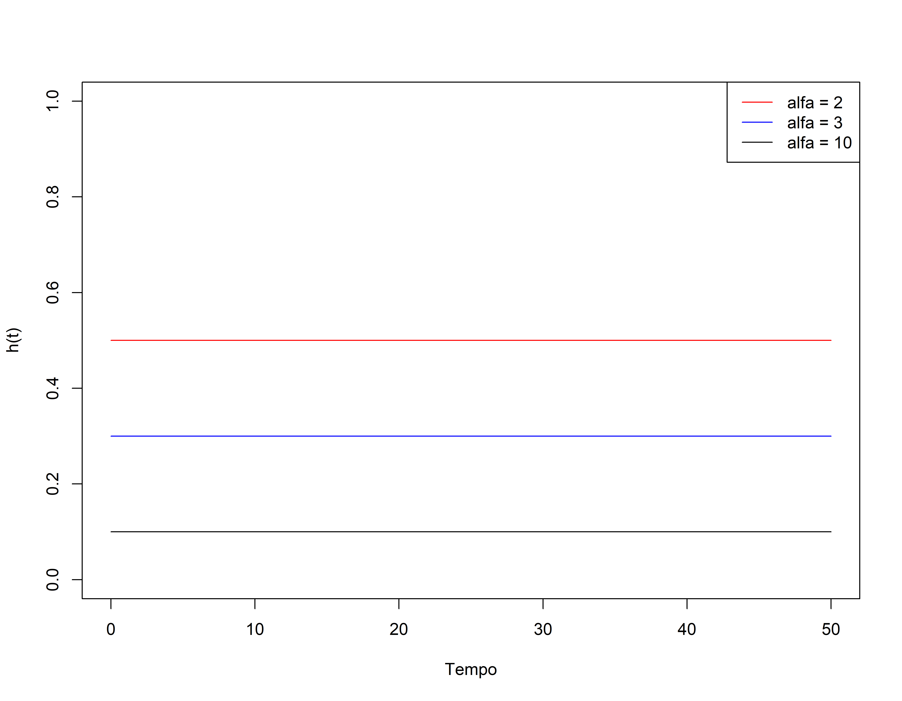

expHaz <- function(x, rate) {
dexp(x, rate=rate)/
pexp(x, rate=rate, lower.tail=F)
}
curve(expHaz(x, rate=0.5), from=0, to=50,
ylab="h(t)", xlab="Tempo",
col="red", ylim=c(0,1))
curve(expHaz(x, rate=0.3), from=0, to=50,
ylab="h(t)", xlab="Tempo",
col="blue", add = T)
curve(expHaz(x, rate=0.1), from=0, to=50,
ylab="h(t)", xlab="Tempo",
col="black", add=T)
legend("topright",
legend = c(expression(paste(alfa, " = ", 2)),
expression(paste(alfa, " = ", 3)),
expression(paste(alfa, " = ", 10))),
lty=1, col = c("red","blue","black"))